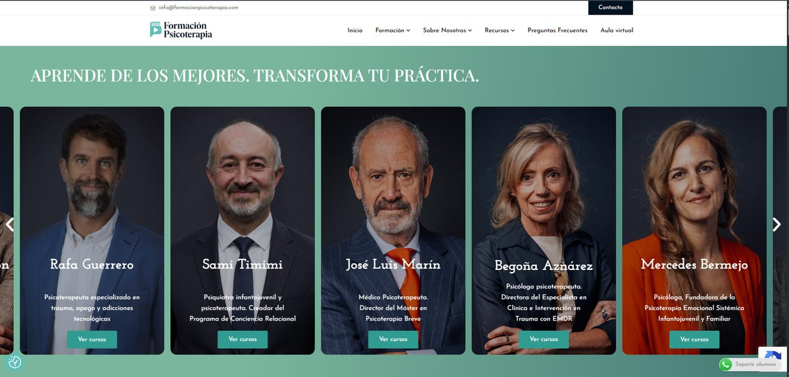

Formación – e-learning+15.000 usuarios
Formación Psicoterapia
Plataforma de formación online con más de 15.000 usuarios registrados: 25 cursos, pagos y seminarios mensuales. Desarrollo completo, soporte técnico y mantenimiento durante 2 años.
WordPressTutor LMS ProWooCommerceElementor
Ver sitio → formacionpsicoterapia.com